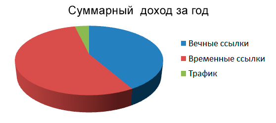
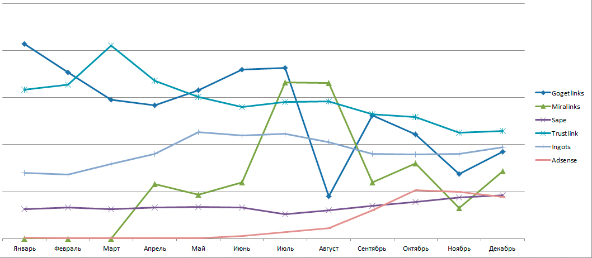
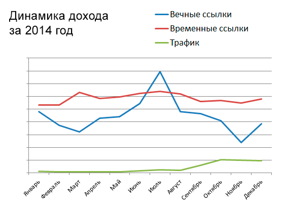

Итоги 2014 года и планы на 2015
Где зарабатываю:
Рынок создания сайтов сильно меняется, и особо заметно это стало в 2014 году. Множественные фильтры за спамность, беспорядочную торговлю ссылками, за малоинформативный контент и накрутку поведенческих факторов понемногу заставляют задумываться. Если вас интересует долгосрочный результат, хочешь не хочешь, приходится работать над сайтом, а не только манипулировать показателями.
До меня это дошло не сразу. Вплоть до конца лета я работал в том же духе, наращивал массу и количество сайтов, которые добавлял в ссылочные биржи и все шло отлично. Доход рос, я закупал новые домены, заказывал контент и готовил новую армию псевдо-полезных проектов, которые собирался запихнуть в биржу. Но этот подход построения бизнеса изначально был провален, особенно если вы хотите настроить пассивный доход, а не вечно клепать субпродукт, который будет попадать под фильтр и замещаться новым субпродуктом.
В начале августа один из самых доходных сайтов попадает под АГС и я теряю около 25-30% своего дохода. Также с ноября начал стремительно падать курс рубля по отношению к доллару. Все эти события заставили меня кардинально поменять направление развития. Результат дальнейших действий и событий можно наблюдать на графиках.
Финансовые итоги 2014 года
Поскольку я не веду финстрипов и не публикую финансовые отчеты в цифрах — опубликую динамику изменений и процентное соотношение долей дохода.

В этом графике отображено соотношение заработанных денег за год.

В этом графике я отобразил динамику дохода наиболее значимых каналов дохода.

Этот график содержит динамику изменения дохода от метода монетизации
На графиках очень наглядно отслеживается тенденция уменьшения дохода с продажи вечных ссылок. Ежемесячные ссылки показывают определенную стабильность, все кроме Trustlink, доход с которого падает уже на протяжении долгого времени.
Подробнее о моих наблюдениях в торговле ссылками читайте на этой странице http://smart-profi.ru/monetizacija-sajtov/realii-zarabotka-na-ssylkax-i-reklamnyx-obzorax/.
Сравнительно недавно начал осваивать направление по наращиванию трафика на сайтах, и последующей монетизацией оного. Результаты хоть и скромные, но определенные успехи есть, а значит двигаемся в нужном направлении.
Планы на 2015 год
Планы на 2015 год у меня не менее грандиозны, чем на предыдущий год, но в блоге я, пожалуй, упущу личностные направления и сконцентрируюсь на бизнесе и на проектах (ведь по большому счету это больше всего интересует моих потенциальных читателей).
Я, как уже успел упомянуть, активно развиваю сайты, увеличиваю посещаемость и тестирую различные способы монетизации этого трафика. На этом и буду делать акценты в 2015 году. Конкретно по пунктам:
Вот такие у меня планы по работе на 2015 год. В завершении хотелось бы пожелать вам удачи и пусть в 2015 году вам сопутствуют радость и успех.